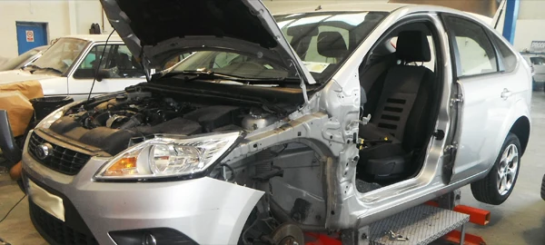

Bodyshop & paint
- Accident & structural repairs
- Damage assessment, chassis measuring and alignment after a collision. We explain what needs to be repaired or replaced.
- Panel beating & bodywork
- Panel alignment, dent repair and replacement of damaged sections. We discuss parts from manufacturers, aftermarket suppliers or recycled sources where appropriate.
- Spray painting & refinishing
- Colour matching and surface preparation for bumper scuffs, scratches, damaged panels and post-collision refinishing.
- Plastic welding
- Repair and reshaping of suitable bumpers, plastic trim and fittings after inspection.
- Headlamps & alloy wheels
- Headlamp refurbishment and cosmetic wheel repairs. We inspect bends, buckles and corrosion before advising on the options.